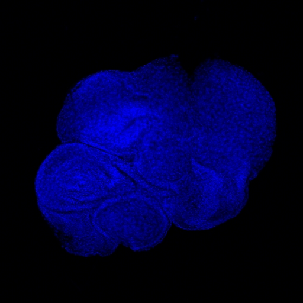
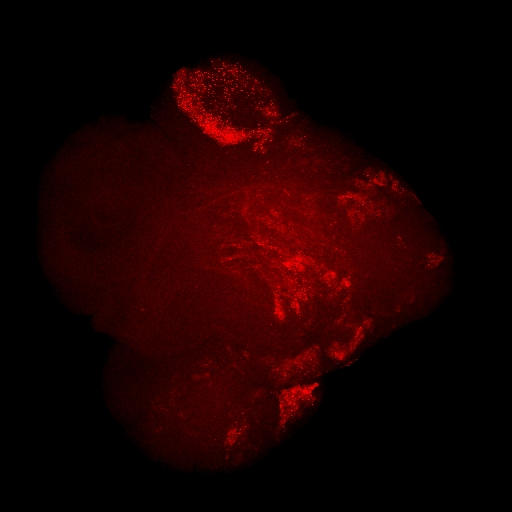
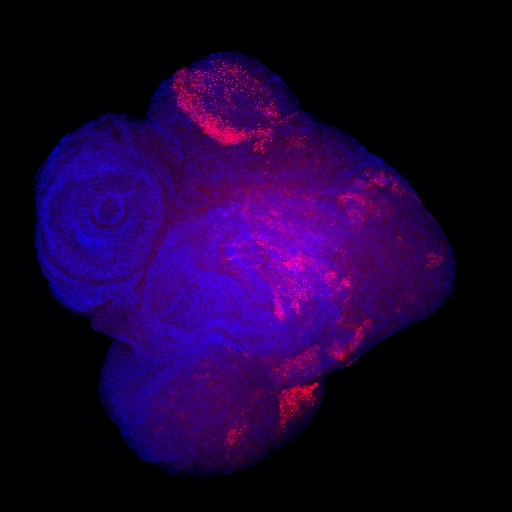
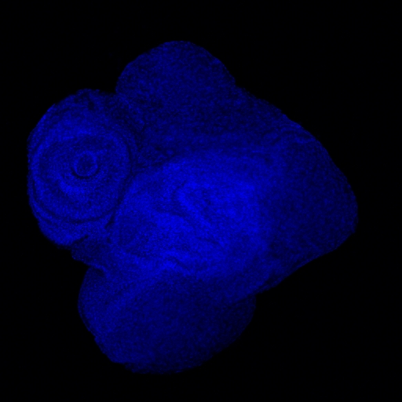
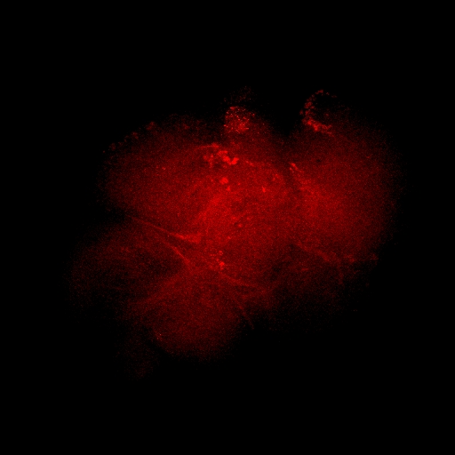
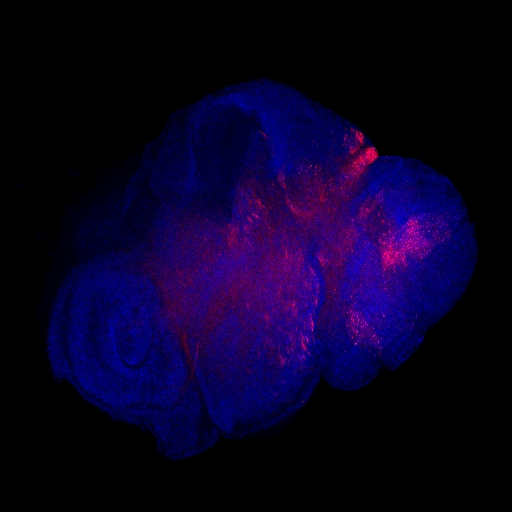

A research project exploring how cancer cells accidentally unlock ancient DNA parasites hidden in our genome — and how these "jumping genes" may fuel tumor chaos. Explained for everyone.
Nearly half of your DNA is made up of transposable elements — ancient sequences that can copy themselves and jump around your genome. Think of them as dormant viruses embedded in your own code.
Normally, your cells keep these elements asleep using chemical locks on DNA packaging (called epigenetic marks). But in cancer, these locks often break. And when they do, something surprising happens…
Ancient DNA parasites that make up ~45% of the human genome. Normally silent, but potentially dangerous when awakened.
A "locking system" that cells use to keep genes shut off. Think of it as a master switch that silences dangerous DNA regions.
Tumors lose their epigenetic locks. When the Polycomb system breaks, sleeping transposable elements can wake up.
When tumors lose their Polycomb locks, specific cancer cell populations unlock transposable elements. Once awakened, these jumping genes don't just sit there — they may actively contribute to genome instability, stress responses, and tumor diversity, making cancers harder to treat.
In simpler terms: Cancer doesn't just break the locks — the things that escape may make the cancer worse. This project aims to prove that and understand exactly how.
Each step leads to the next, creating a cascade that may drive cancer progression
Before even starting the full project, the team made a striking observation. When they disrupted Polycomb (Psc + Su(z)2 knockdown) in the Drosophila eye epithelium, tumors formed — and a specific jumping gene called TABOR woke up massively in every single one, with a 170-fold increase (log2FC = +7.43).
Blue = DAPI (nuclei) · Red = TABOR RNA-FISH · Ey-Gal4 > UAS-Psc RNAi, Su(z)2 RNAi






DESeq2 analysis · Padj < 0.05 · 1,394 genes + 20 TEs significantly changed
This is the key insight: TABOR activation isn't just a side effect of broken locks — it's linked to the tumor identity itself. Block the tumor program (Stat92E or Zfh1 knockdown), and TABOR goes back to sleep. The selectivity of TE response (some up, some down) proves this is not random epigenetic collapse.
Polycomb complexes (PRC1 & PRC2) are well-known gene silencers, but their role in controlling jumping genes in non-reproductive tissues is barely understood. This aim maps which TEs are controlled by Polycomb in the fruit fly eye disc.
Cells have a second defense: the siRNA pathway (RNA interference), which detects and destroys dangerous RNA. This aim tests whether RNAi steps in to compensate when Polycomb breaks down.
The most ambitious aim: understanding the consequences. When TEs activate in tumors, do they cause DNA damage? Trigger immune-like alarms? Change which cells live or die?
This project proposes a radical new idea: transposable elements aren't just passive bystanders in cancer — they may be active sensors and drivers of tumor instability.
Understanding this could open entirely new approaches to cancer diagnosis and treatment.
TEs as dynamic sensors of epigenetic instability in cancer
Explains how identical tumors develop diverse cell populations
TE activation patterns could mark specific tumor states
Understanding TE-driven stress may reveal new treatment targets
DNA sequences that can copy and paste themselves around the genome. Dormant in healthy cells, but can reactivate in cancer.
Chemical modifications that control gene activity without changing the DNA sequence. Like sticky notes on a book that say "skip this chapter."
Protein complexes that silence genes by modifying DNA packaging. When they fail in cancer, previously locked regions open up.
A specific jumping gene (LTR retrotransposon) that wakes up in 100% of Polycomb-deficient tumors. The star witness of this project.
A cellular defense that uses small RNA molecules to detect and destroy dangerous RNA. Like a antivirus software for your cells.
When DNA accumulates damage and mutations faster than normal. A hallmark of cancer that TE activation may worsen.
The fact that cells within the same tumor can be very different from each other. This makes cancers harder to treat.
The fruit fly — a powerful model organism. Its tumor biology shares core mechanisms with human cancer, but can be studied much faster.
Leading this project at the intersection of cancer biology and transposable element research, Dr. Akkouche brings deep expertise in epigenetics, piRNA biology, and genome defense. His recent Nature publication on dual histone mark recognition laid the groundwork for understanding how epigenetic states control jumping genes — now extended into the cancer context.
A 5-year ERC Starting Grant proposal to establish a paradigm shift in how we understand genome activity in tumors
This project doesn't incrementally extend existing knowledge — it proposes a fundamentally new conceptual framework that challenges how the field thinks about transposable elements in cancer.
The field treats TE activation in cancer as collateral damage — a passive consequence of global epigenetic collapse. Our preliminary data shatter this view: TABOR is upregulated 173-fold (log2FC = +7.43, padj ≈ 0), activation is 100% penetrant, correlates with tumor size, and disappears when the tumor program is blocked. This means TE activation is not noise — it is a readout of a specific tumor cell state. No one has demonstrated this before.
Polycomb is one of the most frequently mutated chromatin systems in human cancer (EZH2, BMI1, PHC). Yet no study has systematically asked how Polycomb dysfunction in tumors unlocks transposable elements. Existing TE-cancer studies focus on DNA methylation. We open an entirely unexplored axis: Polycomb → TE activation → tumor consequences.
Almost all TE-cancer studies use bulk RNA-seq, averaging signal across millions of cells. We will use single-molecule RNA-FISH combined with cellular stress markers to map TE activation at single-cell resolution within intact tumor tissue. This reveals which specific cells activate TEs, and whether those cells are dying, dividing, or stressed — information completely lost in bulk approaches.
We propose that Polycomb and RNA interference form a layered defense system against TEs in somatic tissues. When Polycomb fails (as in cancer), RNAi may buffer TE activation — explaining why only specific TEs escape. No one has tested this cooperation model in a tumor context. This could explain the selectivity of TE activation patterns observed across cancer types.
The PI's 2025 Nature Structural & Molecular Biology paper demonstrated that E(z) (the Drosophila EZH2 homolog) controls chromatin protein targeting via dual histone marks. This is the exact enzyme and mechanism now being investigated in the cancer context. No other lab combines this depth of E(z)/Polycomb mechanistic expertise with a validated tumor model showing TE activation.
Why should an ERC panel care about fruit fly tumors? Because the molecular machinery is deeply conserved, and our findings point directly to some of the most common mutations in human cancers.
Tazemetostat (EZH2 inhibitor) is FDA-approved for epithelioid sarcoma. Our work predicts that EZH2 inhibition should reactivate specific TEs — this could be therapeutically exploited (immune activation via viral mimicry) or represent a dangerous side effect. Either way, understanding this is critical.
When TEs activate, they can produce foreign-looking proteins and double-stranded RNA that trigger innate immune responses. In human cancers, this "viral mimicry" is being explored as a way to make tumors visible to the immune system. Our framework predicts which tumor states would produce the strongest TE-driven immune signals.
If TE activation marks specific tumor states (as TABOR does in our fly model), then TE expression signatures could become diagnostic or prognostic markers in human cancers. Liquid biopsy technologies can already detect TE-derived transcripts in blood — our work provides the biological logic for which TEs to look for.
TE-driven genome instability could generate genetic diversity within tumors, creating resistant subclones. Understanding how and when TEs fuel this diversity could help predict resistance and design combination strategies.
To bridge from fly to human, we will analyze publicly available human cancer datasets (TCGA, ENCODE, single-cell atlases) for TE expression patterns in Polycomb-mutant tumors. Specifically:
Work packages are staggered to build on each other, with key decision points and deliverables marked.
Mitigation: We use Drosophila where TABOR shows 100% penetrance and strong signal. We also employ amplification-based FISH (HCR-FISH) for enhanced sensitivity. If needed, we shift to multiplexed imaging approaches.
Mitigation: We use clonal analysis (FLP-FRT) to generate mutant patches in otherwise wild-type tissue. Temporal control via Gal80ts allows staged inactivation. Alternative: partial knockdowns via RNAi titration.
Mitigation: This is scientifically interesting either way — divergence would reveal lineage-specific TE control mechanisms. The fly model provides stand-alone mechanistic value. Human work is designed as validation, not as the project's foundation.
Mitigation: PI's lab is embedded in GReD (a major French genetics center) with strong PhD programs and international postdoc recruitment. Timeline includes 3-month buffer for hiring.
Target: Genes & Development / EMBO Journal
Target: Molecular Cell / EMBO Journal
Target: Nature / Science / Cell
Target: Nature Cancer / Cancer Discovery
Target: Nature Reviews Cancer / Nature Reviews Genetics
All sequencing data deposited in GEO/SRA. Custom analysis pipelines on GitHub. Preprints on bioRxiv prior to journal submission.
1 PhD thesis + 2-3 Master's internships. International conference presentations (EMBO, Keystone, Epigenetics Gordon Conference).
1. We have discovered that transposable elements don't just passively wake up in tumors — their activation is tied to the tumor cell state itself, a finding no one else has reported.
2. The PI has published proof (Nature Structural & Molecular Biology, 2025) that the exact Polycomb enzyme at the center of this project controls chromatin targeting via a novel dual-mark code, establishing unique expertise and credibility.
3. This project will create a new conceptual framework — transposable elements as dynamic sensors and drivers of epigenetic cancer states — with direct translational relevance to human oncology through EZH2 therapeutics, immune activation, and cancer biomarkers.